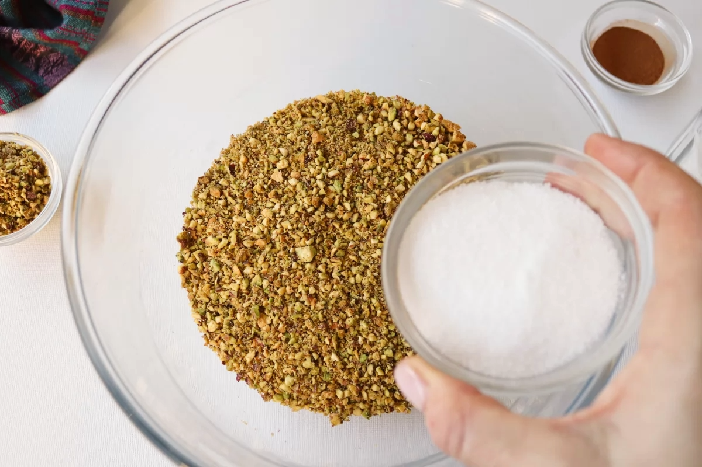
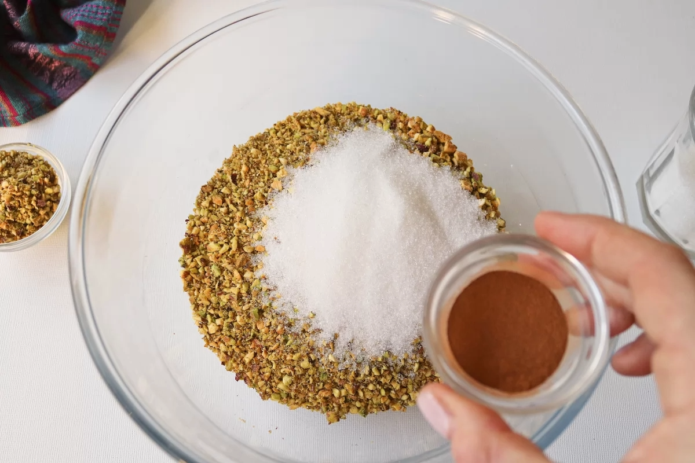
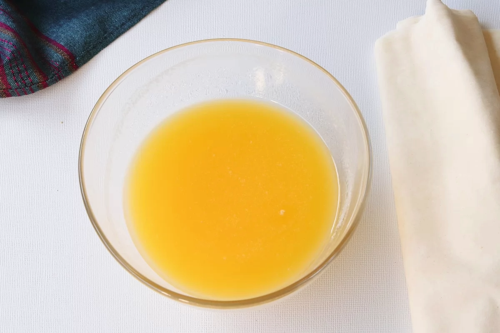
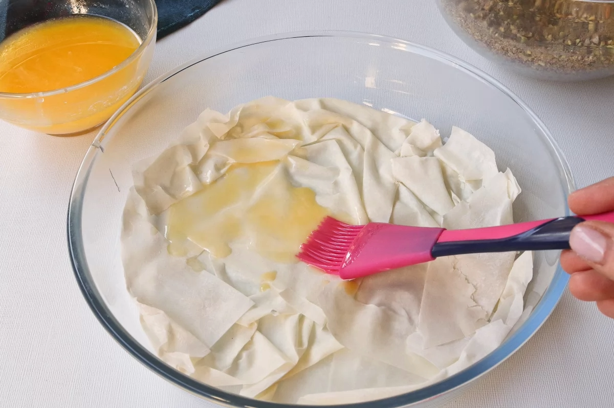
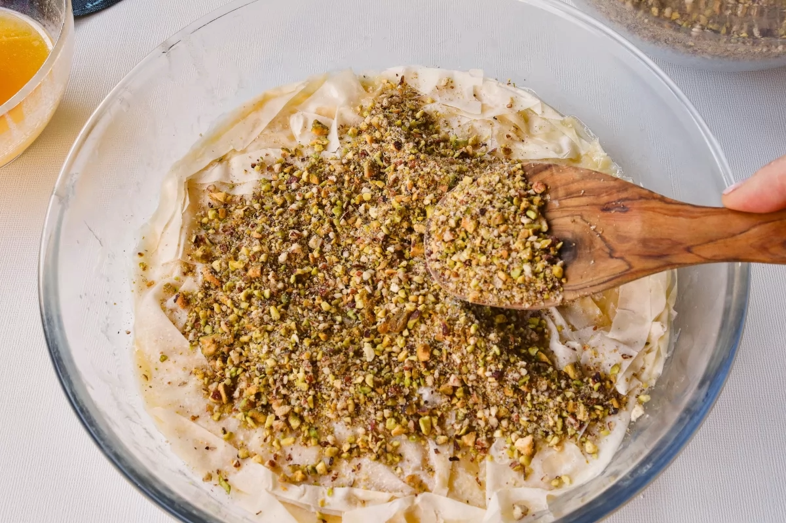
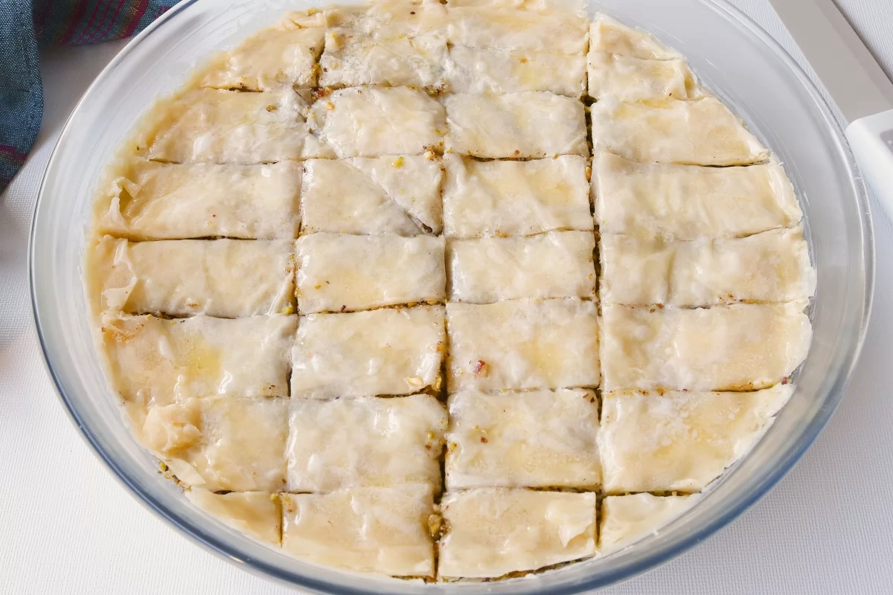
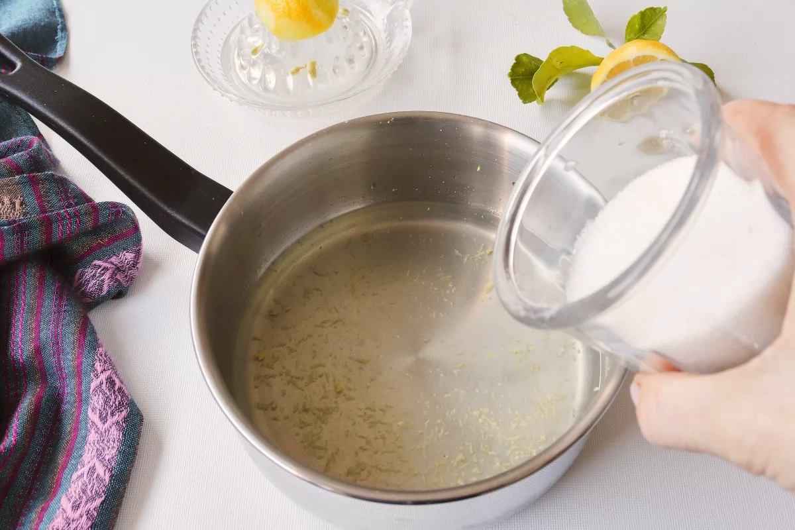
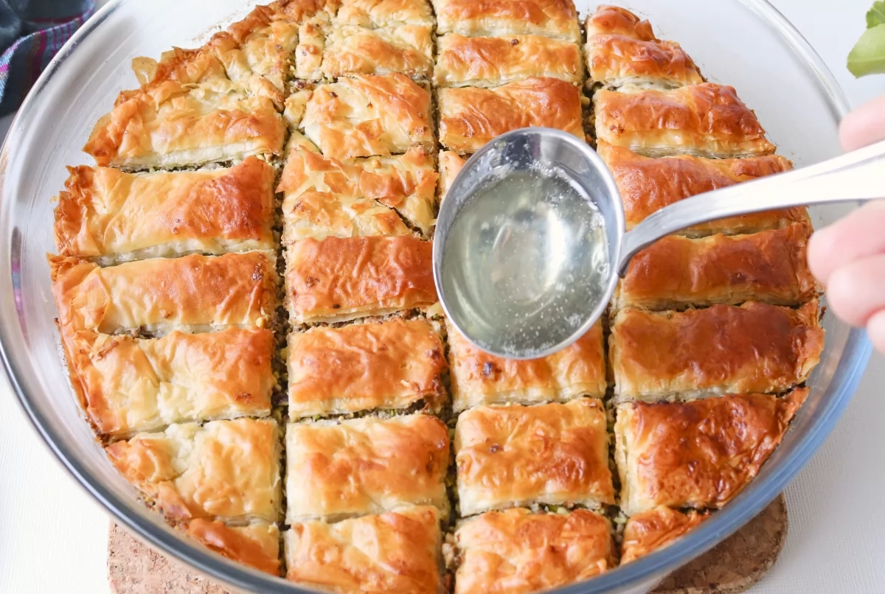
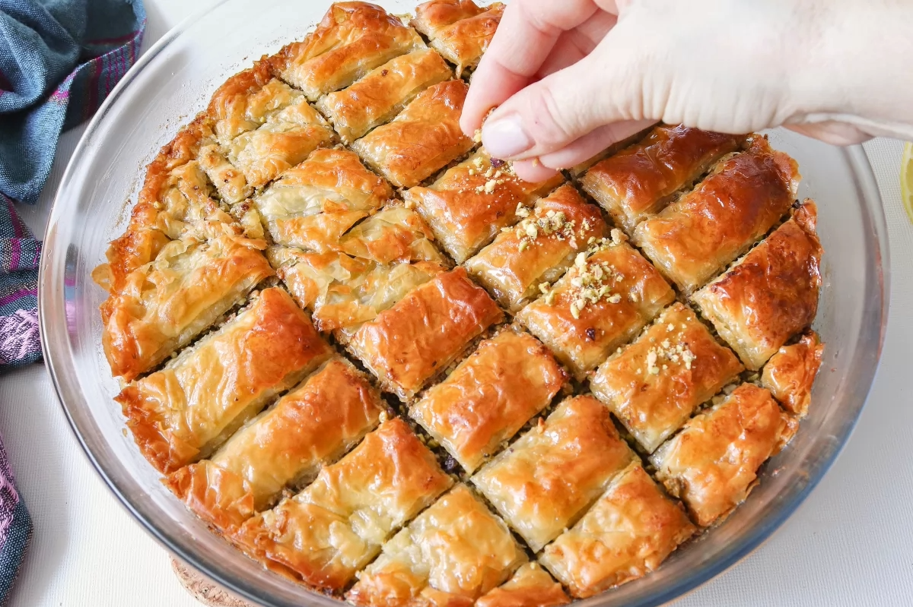
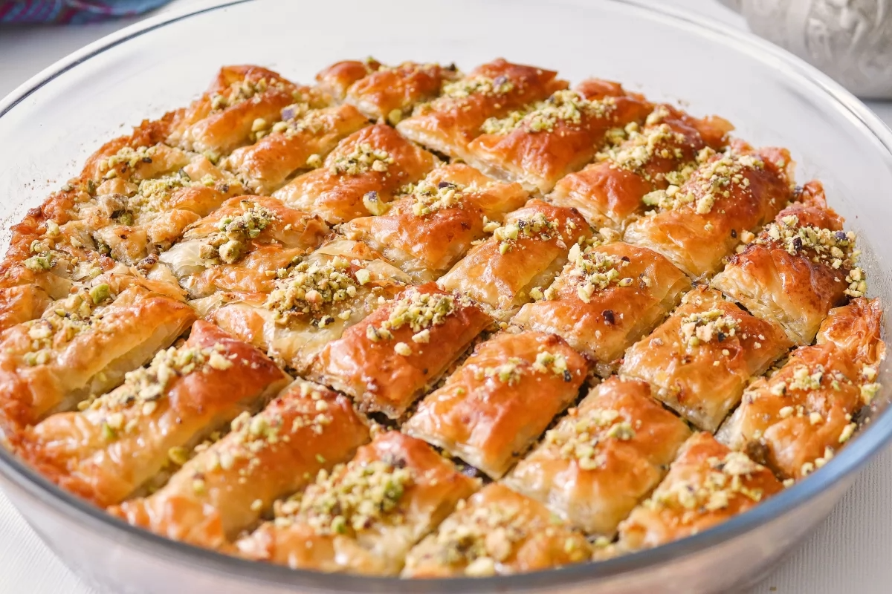

Tornar a l'inici
Espárragos rellenos
Index de contiguts
Ingredients
- 250 g de pistachos (o nueces o una combinación de ambos)
- 200 g de azúcar
- 1 cucharadita de canela
- 150 g de mantequilla
- 10 láminas de pasta filo (250 g)
- 200 ml de agua
- Ralladura y zumo de medio limón
Pas a pas
- El baklava puede hacerse de pistachos o nueces, o una combinación de ambos. Para esta receta, nosotros vamos a usar 250 g
de pistachos. Con ayuda de una picadora, picamos los pistachos para poder usarlos como relleno. Una vez picados, reservamos 1 cucharada
de estos para usarla en la decoración. Tras esto, añadimos 50 g de azúcar al resto de los pistachos. Reservamos el resto del azúcar para
hacer el sirope.

- Añadimos también a los pistachos molidos 1 cucharadita de canela para terminar de preparar el relleno.

- Por otro lado, fundimos 150 g de mantequilla. Podemos fundir la mantequilla en el microondas o en un cazo a fuego suave.

- En una fuente apta para horno, colocamos una primera capa de pasta filo, como la lámina será más grande que el molde arrugamos los bordes. A continuación, pintamos la masa con mantequilla.
Repetiremos este proceso 4 veces más hasta haber puesto en el molde 5 capas de masa filo.

- Ahora ponemos el relleno de pistachos presionando bien antes de seguir con más capas de pasta filo.

- Colocamos otra capa de pasta filo sobre el relleno, la pintamos con mantequilla y hacemos lo mismo con las otras 4 láminas de pasta filo que nos quedan. Al igual que con las demás,
pintamos la capa superior de pasta filo con mantequilla. A continuación, cortamos todas las capas en porciones más o menos iguales. A nosotros nos han salido 25. Una vez hechos los cortes,
llevamos el pastel al horno precalentado a 180 ºC durante unos 30 minutos.

- Mientras se cocina el pastel en el horno, hacemos un sirope con 200 ml de agua, la ralladura y el zumo de medio limón y los 150 g de azúcar restantes. Para ello, llevamos
todos los ingredientes a un cazo a fuego fuerte y cocinamos el sirope durante unos 5 o 6 minutos, hasta que el azúcar se haya disuelto totalmente.

- Sacamos el pastel del horno y le vertemos el sirope repartiéndolo bien por toda la superficie.

- Para terminar, espolvoreamos los pistachos molidos que habíamos reservado.Servimos el baklava, una vez frío, en porciones individuales acompañando un té o un café.

Resultat Final

Tornar a l’encapçalament principal